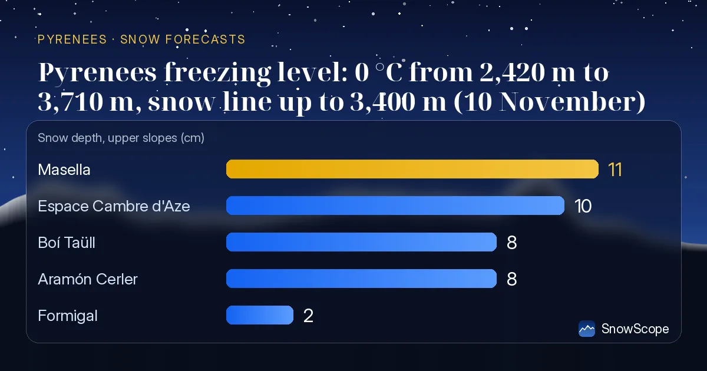

Pyrenees freezing level: 0 °C from 2,420 m to 3,710 m, snow line up to 3,400 m (10 November)
On Tuesday 10 November across the Pyrenees, the 0 °C level spans from 2,910 m at its coldest to 3,710 m at its warmest. The snow line—where rain turns to wet snow—sits about 300 m lower, reaching as high as 3,400 m at Masella during the afternoon. Over the next three days, the freezing level will drop steadily, bringing the snow line down to lower altitudes by Friday.
See the live snow forecast for Boí Taüll in the SnowScope appSnow depth, powder alerts and the 3D map, free.
How the freezing level moves through the week
Tuesday 10 November marks the warmest day: 0 °C reaches 3,710 m at its peak. Wednesday 11 November turns cooler, with the freezing level falling to 2,740 m at dawn and 3,370 m by afternoon. Thursday 12 November continues the drop: 2,580 m to 3,280 m. By Friday 13 November, the 0 °C level has fallen dramatically to between 2,420 m and 2,730 m—a shift of over 1,000 metres in five days.
This rapid cooling matters because it changes where precipitation falls as snow. Early in the period, most rain reaches the mid-mountain areas; by Friday, snow starts at much lower elevations.
| Resort | Snow depth | New snow, 72 h | Coming, next days | Top |
|---|---|---|---|---|
| Boí Taüll | 8 cm | 0 cm | 14 cm | 2,747 m |
| Aramón Cerler | 8 cm | 0 cm | 15 cm | 2,618 m |
| Masella | 11 cm | 0 cm | 1 cm | 2,509 m |
| Espace Cambre d'Aze | 10 cm | 0 cm | 1 cm | 2,377 m |
| Formigal | 2 cm | 0 cm | 7 cm | 2,264 m |

Where rain meets snow at each resort
Masella and Espace Cambre d'Aze, both on the eastern side, see the highest snow lines on Tuesday: near 3,400 m. Here the whole mountain sits in the rain-or-wet-snow zone if any precipitation falls. Aramón Cerler's snow line stays near 2,900 m on Tuesday, so rain dominates at all elevations.
Formigal, lower and more exposed, has a snow line around 3,000 m on Tuesday. Only the very top would see snow; everywhere else gets rain or wet snow. Boí Taüll, with its higher base at 2,039 m, sees snow line near 3,200 m—still well above the summit—so the entire resort is wet-snow territory if it rains.

Rain-on-snow danger across three days
All five resorts face rain-on-snow risk on Tuesday, Wednesday and Thursday. Boí Taüll carries about 8 cm on the upper slopes with the snow line above mid-mountain all three days. Aramón Cerler has 8 cm at the top; Masella holds 11 cm. When rain falls on existing snow that thin, the pack becomes heavy and wet first, then refreezes hard during the night, creating icy surfaces.
Saint-Lary, west of the main ridge, is forecast to receive 69 mm over the next five days, with the snow line near 2,690 m during rainfall. Baqueira-Beret will see 28 mm, with the snow line around 2,810 m. Both resorts risk wet snow at mid-mountain elevations on three consecutive days.
Friday's sharp turn: when cold air arrives
Friday 13 November marks a turning point. The freezing level drops to 2,420 m—low enough that snow line reaches 2,300 m or below at most resorts. Formigal's peak at 2,264 m moves into the all-day-below-freezing zone for the first time. High slopes everywhere turn from wet-snow risk into dry-snow potential, though only small amounts are forecast.
This timing is important: the small totals in the forecast (1 cm to 7 cm by Friday) will bond poorly to warm, wet snow from earlier days. Any fresh cover will sit on top of an icy layer.
What this means for skiers
Early-week runs on high, north-facing slopes get harder as the morning progresses; afternoon snow turns to slush. By Friday, north faces stay frozen longer, but the base of new snow is thin and sits on ice from the earlier rain.
The forecast freezing level can shift by 300 to 400 metres if the weather pattern changes. Check the map again on Wednesday evening or Thursday morning to see if conditions have moved up or down.
Tips for skiers
- Tuesday to Thursday: seek north-facing slopes high up early in the morning before warmth softens the surface; avoid lower elevations where rain dominates.
- Friday: the snowpack becomes stable and cold, but depth is limited (1 to 7 cm new). Watch for icy base layers under any fresh snow.
- Watch the official avalanche bulletin before any off-piste or touring plan, especially on days with rain-on-snow risk (Tuesday, Wednesday, Thursday).
- The freezing level forecast carries uncertainty of several hundred metres; recheck the SnowScope map the evening before your tour.
- Snow shown on the map does not confirm a resort is operating: verify lift status and opening dates on each resort's website before you go.
About these numbers
Resort snow depths are the deepest snow on the resort's upper slopes on the date shown; they are estimates for an area, not a measurement at one point. Forecasts can change. Always read the official avalanche bulletin before going off-piste.
Official avalanche bulletins: Météo-France / Meteocat / AEMET
Cite this report
For research, teaching or the press: the numbers and charts are free to reuse under CC BY 4.0 with this citation.
SnowScope (2026), Pyrenees freezing level: 0 °C from 2,420 m to 3,710 m, snow line up to 3,400 m (10 November), https://snowscope.app/blog/en/2026/11/pyrenees-freezing-level-snow-line-10-november-2026.html, accessed 2026-11-10
SnowScope (Atlas Labs). (2026, November 10). Pyrenees freezing level: 0 °C from 2,420 m to 3,710 m, snow line up to 3,400 m (10 November). SnowScope snow reports. https://snowscope.app/blog/en/2026/11/pyrenees-freezing-level-snow-line-10-november-2026.html
BibTeX
@misc{snowscope2026pyreneesfreezinglevelsno,
author = {{SnowScope (Atlas Labs)}},
title = {Pyrenees freezing level: 0 °C from 2,420 m to 3,710 m, snow line up to 3,400 m (10 November)},
year = {2026},
month = nov,
howpublished = {\url{https://snowscope.app/blog/en/2026/11/pyrenees-freezing-level-snow-line-10-november-2026.html}},
note = {Published 2026-11-10 13:18 UTC; accessed 2026-11-10}
}· CC BY 4.0 · Methods, data and tools →
Boí Taüll: snow and temperature by height, this winter vs last (tools) →
Follow Boí Taüll
Free: a message when fresh snow is coming, and the forecast every morning.
More snow reports

We combined today's snow depth, the new snow of the last 72 hours and the forecast to pick Masella, Cauterets Cirque du Lys and Aramón Cerler. Of …

Masella, Port-Ainé and Cauterets have the most skiable snow in the Pyrenees on 3 November. Upper slopes hold 15–17 cm.